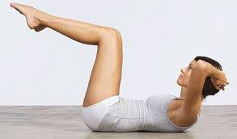
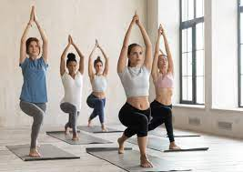

¿Qué es la disciplina yoga y para qué sirve?
El yoga es una práctica que conecta el cuerpo, la respiración y la mente. Esta práctica utiliza posturas
físicas, ejercicios de respiración y meditación para mejorar la salud general. El yoga se desarrolló
como
una práctica espiritual hace miles de años.
Yoga Vital:
El Yoga Vital es un sistema de yoga con énfasis en lo terapéutico. Enseña a hacer conscientes
funciones
vitales como la respiración, la actividad corporal, la relajación y el pensamiento positivo. Crea un
estado interior de calma y claridad, ayudando a manejar el estrés cotidiano, favoreciendo cualquier
tratamiento médico.

Hatha Yoga:
El Hatha Yoga es una práctica cuyo objetivo es la transformación física y mental, buscando siempre el
equilibrio entre flexibilidad y fuerza. Fortalece y optimiza el sistema inmunológico. Al trabajar la
musculatura y los órganos se refuerza el sistema linfático, ayudándole a eliminar toxinas y combatir
las
infecciones. Ayuda a liberar las tensiones, aportando paz espiritual, relax y te ayuda a sentirte
feliz
contigo mismo, centrarte y ser consciente de cada acción que realizas.

Taller de Ayurveda:
En el taller intensivo de Ayurveda haremos hace hincapié en la buena salud y en la prevención y el
tratamiento de la enfermedad combinando nuestras prácticas con una buena alimentación, así como el
uso
de remedios herbarios.